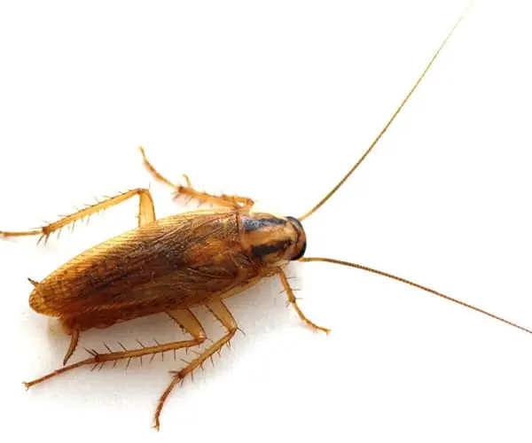
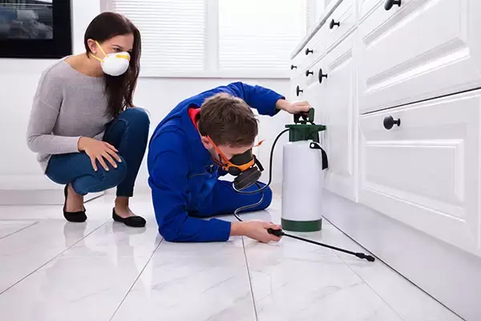
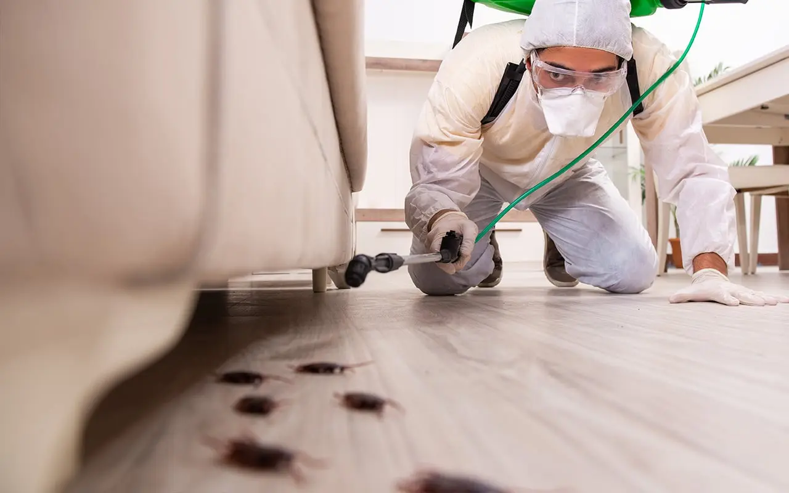

comment debarrasser cafards traitement efficace
Comment chasser les cafards dans la maison ?
Invasion de cafards à casablanca : les bonnes solutions pour un traitement efficace
Peu de gens le savent, mais les cafards et les blattes désignent exactement la même chose. Ce sont des insectes principalement rampants qui font partie avec les thermites des blattoptères. Les cafards sont considérés comme des nuisibles à cause des dégâts qu’ils peuvent causer et des maladies qu’ils peuvent véhiculer.
au Maroc, les problèmes de cafards et de blattes sont un véritable fléau. Il faut faire appel à une societe de nettoyage casablanca et de la désinsectisation comme HVNET NETTOYAGE qui intervient à casablanca et partout au Maroc. En quoi les cafards sont-ils un problème ? Comment trouver le bon traitement pour les cafards au Maroc. ? C'est ce que nous allons voir dans les lignes à suivre.
Les cafards et blattes, des nuisibles envahissants
Une recrudescence de cafards à Casablanca en 2022
Depuis quelques années, certains nuisibles prolifèrent dans la capitale. Jusqu’à présent, ils étaient encore assez discrets. mais la période de confinement et la réduction de l’activité humaine dans les rues les ont encouragés à faire surface. En effet, la plupart des nuisibles se nourrissent de nos déchets. C’est le cas des cafards.
Ils envahissent les logements, les bureaux, les entrepôts et surtout les magasins alimentaires et les restaurants. La fermeture des établissements accueillant du public et les chaleurs du printemps leur a permis de proliférer dans les meilleures conditions. Pour de nombreux Casablancaiens, les cafards sont devenus leur pire cauchemar et leur seul souhait est de trouver des solutions pour s’en débarrasser.
reconnaître un cafard ?
Avant d’appeler un professionnel de la désinsectisation sur Casablanca, il faut essayer d’identifier le problème et savoir par quel nuisible vous êtes envahi. De cette manière, ils interviendront avec le bon matériel, et surtout avec le bon insecticide. Dans le monde, nous avons recensé plus de 6000 espèces différentes de cafards. Néanmoins, seul 1 % de ces espèces sont en interaction avec l’être humain. Nous connaissons quatre grandes familles de blattes. Pour les reconnaître, c’est très simple, il suffit de les observer.
La blatte germanique, présente sur tous les continents mesure entre 1 et 1,5 cm. Elle a une forme ovale et on la reconnaît facilement grâce aux deux traits sombres situés au niveau du cou. On ne les observe pas souvent voler. On la trouve dans les endroits humides et sombres comme la salle de bain ou les canalisations de la cuisine par exemple.
La blatte orientale mesure jusqu’à 2,5 cm et l’on distingue les mâles des femelles à la taille des ailes (celles des femelles sont beaucoup plus courtes que celles des mâles). Comme elles raffolent de matière organique en décomposition, on la trouve fréquemment aux abords des déchèteries. Comme les autres variétés de blattes ; la blatte orientale mue entre 5 et 8 fois dans sa vie.
La blatte américaine est la plus grande des quatre et peut atteindre 4 cm. Elle est brune et luisante et peut voler sur de courtes distances. Là encore, les femelles ont les ailes bien plus courtes que celles des mâles qui recouvrent entièrement l’abdomen.
societe de nettoyage casablanca
Enfin, la blatte rayée est aussi grosse que la blatte germanique. C’est celle qu’on retrouve dans les meubles.
Les blattes, sont-elles dangereuses pour ma santé ?
Malheureusement oui et c’est l’une des raisons pour laquelle les autorités la considèrent comme un animal nuisible. Un cafard ou une blatte ne piquent pas. Par contre, ces insectes rampent et véhiculent des bactéries, des parasites et des microbes en se déplaçant et en entrant en contact avec les produits alimentaires, des tissus, des meubles ou les autres surfaces de la maison.
Les agents pathogènes viennent en effet se fixer sur leurs abdomens. Ensuite, ce sont des espèces auxquelles on peut être allergique et elles sont aussi responsables de troubles de la respiration comme l’asthme chez les enfants par exemple.
Les blattes, sont-elles dangereuses pour les animaux ?
Là aussi, il faut veiller à ne pas être infestés de blattes chez soi, car cela peut avoir des conséquences sur la santé de vos animaux de compagnie. D’abord, pour les mêmes raisons que nous. Ensuite, elles sécrètent dans leur corps une substance qui peut s’avérer toxique. Or, les chats et les chiens ont cette fâcheuse tendance à manger les insectes et peuvent avoir des problèmes au niveau de l’appareil digestif. De plus, comme on l’a dit plus haut, ils peuvent véhiculer des parasites et les transmettre aux animaux.
Quelles sont les pièces de la maison où les blattes se logent ?
Pour commencer, il faut savoir que beaucoup de foyers de blattes et de cafards se développent en milieu naturel. C’est le cas notamment de la blatte orientale. Mais ce qui nous intéresse, c’est de savoir où elles s’installent chez nous, car c’est là qu’elles sont considérées comme étant des insectes nuisibles pour nous.
societe de nettoyage casablanca HVNET NETTOYAGE
L’habitat d’une blatte dépend beaucoup de son mode de vie en réalité et principalement de deux facteurs. D’abord, elles recherchent les conditions dont elle a besoin pour sa reproduction. C’est pour cela que les blattes se développent avant tout dans les zones sombres, humides et à bonne température. Les nids s’installent près d’une salle de bain, dans des meubles, des canalisations, des sous-sols, dans les murs…
Mais il faut également que ces insectes se nourrissent. C’est pour cela qu’on les trouve aussi dans la cuisine, dans les locaux à poubelles, dans les déchèteries ou encore près du bac de compost. Pour éviter d’avoir une invasion de cafards dans sa maison, il faut veiller à plusieurs choses. D’abord, veillez à ne pas laisser traîner d’aliments ou de restes puis à vider régulièrement les ordures.
Ensuite, il est indispensable de ne pas laisser un problème de moisissure ou d’infiltration sans solution parce qu’à terme, les nuisibles y trouveront le meilleur foyer. Enfin, gardez votre maison propre et utilisez du désinfectant. Dans les appartements Casablancaiens, on les trouve beaucoup dans les canalisations, dans les murs de vieux immeubles, dans les sous-sols et les locaux à poubelles.
Le traitement contre les cafards par des professionnels avertis
Pourquoi est-il difficile de traiter les cafards à Casablanca ?
À Casablanca, les immeubles sont mitoyens et sont divisés en appartement et en locaux commerciaux ou professionnels. Très souvent, les cafards infestent les murs, les canalisations et les sous-sols qui communiquent. Cela signifie que si le traitement n’est pas appliqué à l’ensemble de l’immeuble, le traitement sera inefficace. C’est pour cette raison que les syndicats de
copropriété font appel à nous pour un traitement généralisé préventif ou curatif. Le plus dangereux à Casablanca, ce sont les logements vacants et non entretenus qui peuvent devenir une source d’infestation pour tous les autres immeubles de la rue. Il faut donc être vigilants.
Est-ce que les traitements trouvés dans le commerce fonctionnent ?
Dans les grandes surfaces et les drogueries, on peut trouver toutes sortes de produits vendus comme des produits anti-cafards ou anti-blattes.
Malheureusement, ils ne sont pas efficaces, car les insectes ont développé une plus grande résistance aux insecticides et en plus les particuliers ne disposent pas des mêmes protections que les professionnels.
Quand les clients font appel à Docteur Nuisibles, ils ont déjà essayé un traitement acheté en grande surface et qui a parfois coûté très cher. Malheureusement, ils se révèlent souvent inefficaces et l’intervention d’un professionnel de la désinsectisation devient une évidence.
Pourquoi les professionnels sont-ils plus efficaces ? D’abord,ils sont protégés et savent protéger votre logement et ses habitants. Ils sont formés pour utiliser les insecticides de manière à les rendre plus efficaces. Les œufs seront aussi éliminés pour éviter à une nouvelle vague d’apparaître et de se développer chez vous.
Ensuite, les professionnels sont habitués à rechercher les zones infestées et la trouvent plus rapidement que vous. Par exemple, chez Docteur Nuisibles, nous n’hésitons pas à utiliser le flair de nos chiens pour trouver des nids d’insectes. Ils savent reconnaître tous les signes. Enfin, ce qui est intéressant avec les professionnels, c’est qu’ils donnent de nombreux conseils et des informations.
Pourquoi faut-il utiliser un traitement chimique contre les blattes ?
Les amis des animaux nous demandent souvent pourquoi les professionnels de la désinsectisation ne déplacent pas le nid plutôt que de tuer ses habitants. Nous leur répondons que c’est un geste qui est difficilement réalisable dans la capitale et sa banlieue. Il faut savoir que les blattes sont considérées comme des nuisibles à cause de leur mode de vie. Elles se nourrissent de nos aliments et peuvent véhiculer des microbes et des maladies par ce biais. Elles sont aussi très allergènes et peuvent être toxiques pour les animaux.
Elles peuvent transmettre également d’autres parasites aux animaux de compagnie. Elles causent beaucoup de dégâts matériels dans un logement, abîment les revêtements, les canalisations, et elles dégagent une odeur nauséabonde et persistante. Vous l’aurez compris, se contenter de déplacer un nid comme on peut le faire avec des abeilles est impossible du fait du risque infectieux et bactériologique.
Comment les professionnels traitent-ils les invasions de cafards ?
À Casablanca et en Maroc, nous faisons intervenir des équipes de professionnels spécialement formés pour manipuler différentes sortes d’insecticide. Pour commencer, ils ont suivi une formation à l’issue de laquelle ils ont obtenu le « certibiocide ».
Il s'agit d'un diplôme recommandé par le ministère de la cohésion et des territoires. Ce certificat atteste que le professionnel qui intervient sait manipuler les insecticides en toute sécurité.
Nos équipes se chargeront d’identifier le type de nuisibles. Si vous avez des cafards, ils le sauront très vite. Il s'agira ensuite d'identifier les foyers, car il peut y en avoir plusieurs. Ils observeront donc scrupuleusement toutes les pièces de votre logement.
Ensuite, ils appliqueront un gel spécial à des endroits stratégiques. Celui-ci ne tue pas l’insecte sur le coup. Le produit met quelques heures à agir pour que la blatte ait le temps de transporter du produit sur elle et contaminer l’ensemble du nid. De cette manière, on élimine à la fois les cafards adultes, mais aussi les œufs.
Nos équipes proposent aussi des interventions préventives pour éviter les invasions de cafards. Généralement, elles sont demandées par des syndicats de copropriété pour éviter que les logements ne deviennent insalubres. Notre principale clientèle sont les particuliers propriétaires de maisons en région Casablancaienne ainsi que des entreprises qui souhaitent sécuriser et assainir leurs locaux professionnels.
En fin si vous avez des difficulter a appliquer les methode faite appel a notre societe de nettoyage casablanca
Pour le nettoyage Résidentiel et Commercial
Notre personnel est formé pour nettoyer tout ce dont vous avez besoin !